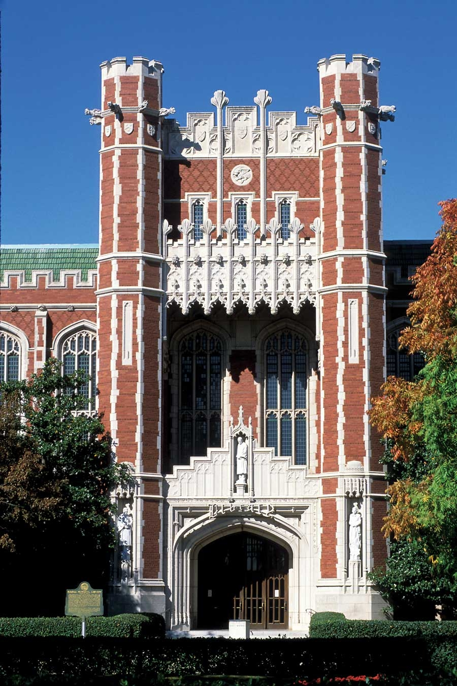

Let’s face it - Oklahoma seems an unlikely candidate for the 11 Great Places You’ve (Maybe) Never Heard Of list. Just ask Kara Joy McKee. She grew up in Norman, a city of about 100,000, located 20 miles from Oklahoma City. “When I was in high school, my creative friends would say ‘I’m going to New York or Los Angeles,’” McKee says. She herself left to travel and live in other places.
But today, at 30, she’s back home in Norman and happy to be there. “In the past five years, a lot of the 30- and 40-something crowd has come back and really started to invest in this place,” she says. “It’s up to us to create our own fun. Everybody knows everybody, and we all pull together.”
The results of this spirit of investment are everywhere. And they’re impressive. The local music scene is revved up, fueled in part by the presence of 30,000 students at Oklahoma University. The annual Norman Music Festival draws high-profile indie rock and alt-country bands, including Of Montreal, Man Man, and local-made goods the Starlight Mints. (The Flaming Lips also hail from Norman.)
Equally fertile is the city’s effort at sustainability - including mass transit initiatives, a community garden movement, and an unusual community supported agriculture program that links farmers and consumers throughout the entire state. Much of this activity is thanks to the Norman Sustainability Network (NSN), an organization that McKee helped establish.
“We started NSN to fight apathy and to inspire Oklahomans to adapt to our changing world,” she says. The network links together a variety of existing groups that are working on various sustainability issues, and the list of topics it’s involved in are impressive. NSN helps organize the annual “Dump the Pump” campaign to promote mass transit; it’s helped launch a metropolitan wind power array; and it’s behind the city’s bike sharing program (and has secured funding for an ambitious bike path).
NSN is also part of a movement to support community garden projects: There’s the “food not lawns” program, designed to help residents turn their front lawns into food gardens, and a community garden connected to a downtown homeless shelter with a mission of teaching self-sustaining organic farming skills.
One of the more interesting ideas flourishing in Norman is the Oklahoma Food Cooperative. A statewide program with its headquarters in nearby Oklahoma City, the co-op operates similar to an online CSA. Farmers and other producers post their items for sale on the website, and for a $50 membership, anyone can browse these items and get them delivered to a drop point nearby.
“The central warehouse is in Oklahoma City, but a large amount of support has come from Norman,” McKee says. “We have two drop-off centers because we have so many people interested.” An unintended benefit of the program is that pick-up day becomes an informal networking day. “It’s a point of connection where people are getting to know each other,” she says. Moreover, the steady demand from consumers has influenced the character of agriculture in the region. “I have so many friends my age and younger who are getting into farming,” she says, in part because they know there’s a market for their labor.
Thanks to the work of activists such as McKee - as well as a liberal city council - there’s a genuine progressive tide in Norman. The regional utility recently designated Norman as the first smart grid city in Oklahoma, opening the way for a decentralized renewable energy network to power the city. In addition, McKee and her fellow activists are currently working on an alternative organic label to ease the burden of paperwork for small producers who can’t afford USDA certification. And with a growing number of like-minded families, a Waldorf school is in the works, McKee says.
“When I was at the university, I was surprised by how many amazing, intelligent professors thought they were in the middle of nowheresville,” McKee says. “But the perception of Oklahoma is very different from what we actually have. Norman draws and keeps a lot of motivated, creative, intelligent people.”
Population: 95,694
Median Household Income: $36,713
Weather: Sunny, windy and warm, with summers in the 80s and 90s and winters that dip into freezing. Average snowfall is 10 inches.
What Makes It Great: High-spirited do-it-yourselfers are building a sustainable city with a great live music scene.
|
 ELK PHOTOGRAPHY Norman is a bustling college town with good entertainment and a strong focus on sustainability. |
|
|